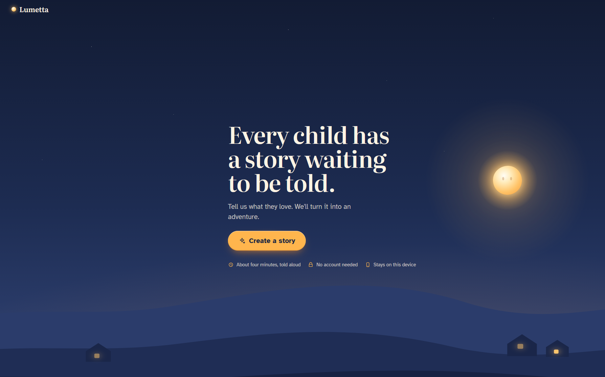
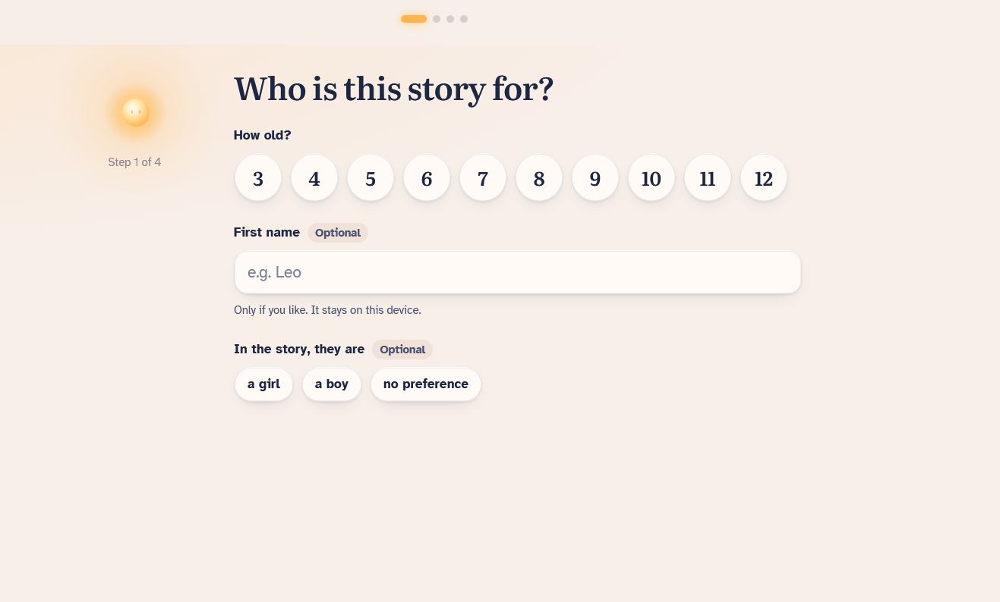
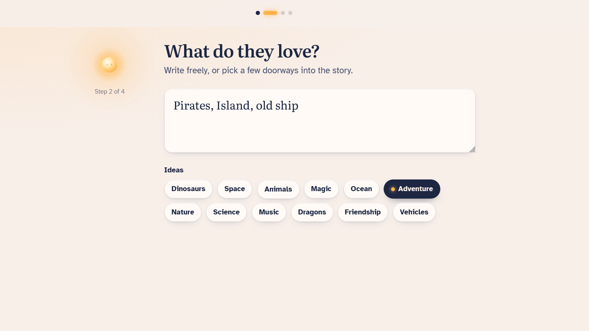
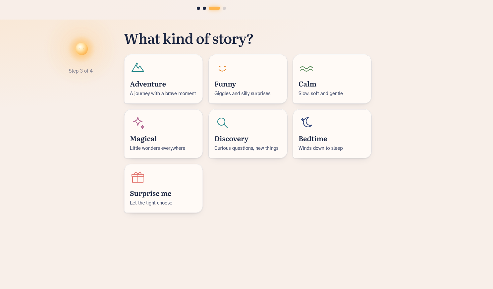
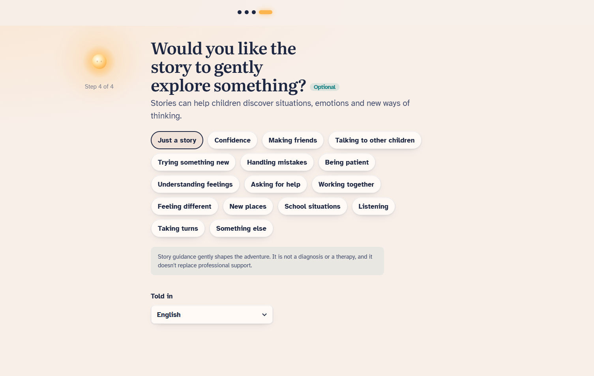
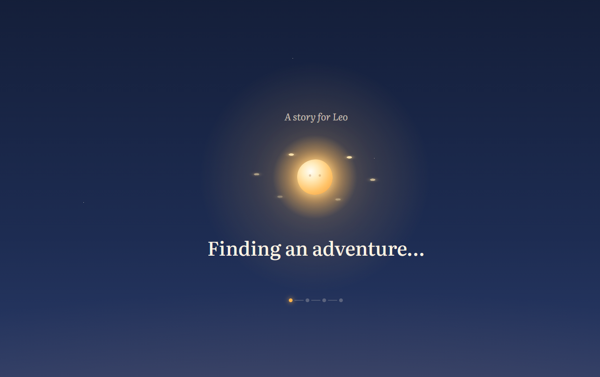
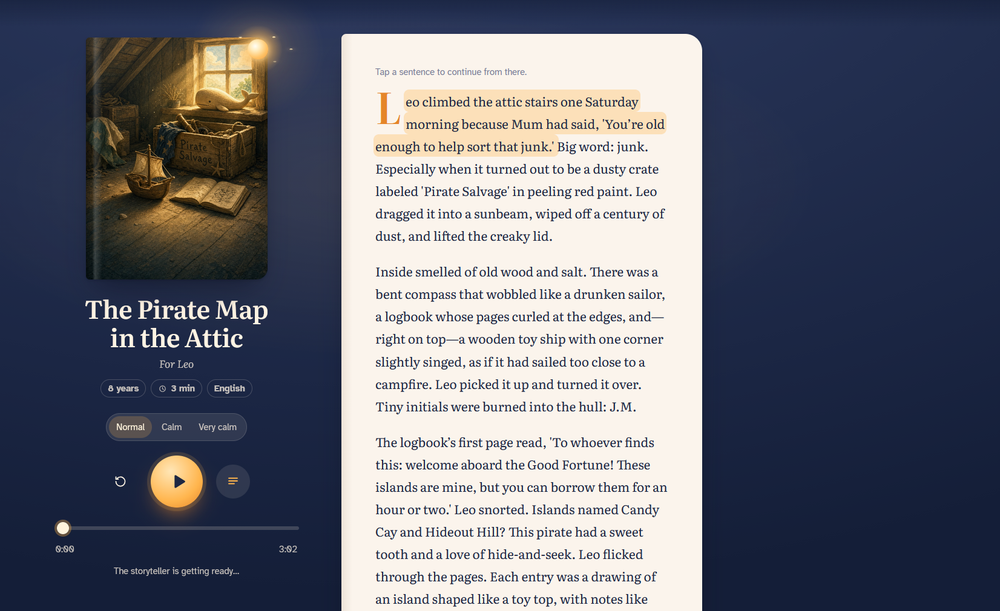

Lumetta
A personalised storytelling experience that turns a child’s age, interests and imagination into an illustrated adventure — then tells it aloud with expressive AI narration.
Open the live Lumetta beta ↗Overview
Lumetta explores a simple idea: a children’s story becomes more meaningful when it feels as though it was made specifically for the child listening to it.
Instead of choosing from a fixed library, a parent or educator gives Lumetta a few ingredients — the child’s age, optional first name, interests and the kind of story they would enjoy. Lumetta then creates a complete short adventure around those choices.
The result is not only text. The experience also creates a visual world around the story and can narrate it aloud, turning the browser into a small personalised storybook.
The original concept grew from an idea by Andreas Rhein and was developed into the working Lumetta prototype by Frank G.
How it works
The flow is deliberately simple. A parent starts with the child rather than with technology: age, name if desired, favourite topics and a preferred kind of story.
Lumetta can then gently shape the adventure around a theme such as confidence, making friends, trying something new or understanding feelings. This layer is optional; choosing “Just a story” leaves the experience purely imaginative.
Age-aware stories
Language, pacing and story complexity are adapted to the selected age rather than using the same text for every child.
Personal interests
Dinosaurs, space, animals, pirates, music, science or completely free-form ideas can become the ingredients of the adventure.
Story styles
Adventure, funny, calm, magical, discovery and bedtime modes give the generated story a clear emotional direction.
Gentle guidance
Optional themes can weave social or emotional situations naturally into the story without turning it into a lesson or diagnosis.
AI illustration
A generated cover image gives each story its own visual identity and makes the result feel like a real little book.
Spoken narration
Expressive text-to-speech reads the story aloud while the child can follow the text on screen.
The experience
The interface was designed to feel calm, warm and approachable rather than like an AI tool. Parents move through four short steps, while Lumetta’s small glowing character acts as a visual guide through the process.
Once the story is ready, the layout changes into a reading view with cover artwork, title, child name, estimated duration, narration controls and the story itself. During playback, the current sentence can be highlighted so listening and reading stay connected.
The target is a compact story of roughly three to four minutes: long enough to create a real beginning, middle and ending, but short enough to work as a bedtime story, classroom activity or spontaneous moment together.
AI & technology
Lumetta combines several AI services behind one intentionally simple interface. Story generation is handled separately from image creation and voice narration so that each part of the experience can use the model best suited to it.
The current beta uses Mistral for story generation and xAI services for image generation and text-to-speech. A Cloudflare Worker provides the API layer between the public web application and the external AI services, keeping service credentials away from the browser.
The front end is deployed as a lightweight GitHub Pages application and is designed to work on phones, tablets and desktop computers without requiring an account.
Design principles
Lumetta was designed around a few constraints that are easy to say and surprisingly difficult to combine: it should feel magical without becoming noisy, personal without demanding an account, pedagogically useful without pretending to be therapy, and technologically sophisticated without making the technology the centre of attention.
The project also treats privacy and data minimisation as product decisions. The interface explicitly avoids requiring an account and keeps the parent-facing flow focused on the minimum information needed to create the story.
Languages can be selected as part of the story setup, making the same concept useful for family reading, language learning and multilingual environments.
Screens
From the landing page to the final narrated story, the screens below show the complete Lumetta flow: defining the child, choosing interests and story style, optional guidance, story generation and the finished reading experience.





